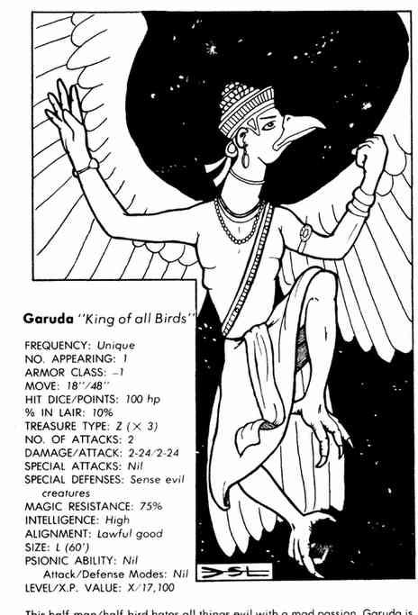

印度神话 · Indian Mythos
印度神话的神祇和仪式往往超越通常的守序／混乱分类。种姓决定出生后的社会位置，在受神祇影响的战役中，人物通常不能随意跨种姓或兼任多个职业；高种姓者必须得到尊敬或独处，魔法师种姓受到所有其他种姓的敬畏。祭祀必须正确，否则要重复祈祷和献祭。信徒佩戴神祇标记；神祇还可能以 avatar（化身） 形式显现，拥有本尊的一部分等级与神力。
因陀罗与因陀罗之象 · Indra 与因陀罗之象
混乱中立强大神，AC −12，生命值 400，魔法抗性 80%，位于混沌位面；25 级牧师、14 级战士、20 级魔法师、10 级吟游诗人。因陀罗能随意控制天气、影响人兽植物，穿 +4 板甲与持 +4 盾；彩虹弓每轮射两道闪电，每道 3–30 点伤害，+3 火焰剑同样造成 3–30 点。他的白象可承载巨大重量并跨越地面、天空和位面，五次践踏各造成 2–20 点伤害。
阿耆尼、迦梨与战神 · Agni、迦梨 Kali 与战神 Karttikeya
阿耆尼 是混乱中立强大神，AC −2，生命值 378，魔法抗性 75%，位于混沌位面；三头七臂，能控制一英里内所有火焰，并像 50 级施法者施放火焰法术。他的火焰斧每击 3–30 点，火焰 aura 使近身者受 25 点伤害；每日三次喷出 30 码、5–50 点伤害的火焰。他还可治愈或造成疾病。
迦梨 是混乱邪恶弱等女神，AC −9，生命值 279，魔法抗性 39%，来自深渊；三眼四臂、夜黑皮肤、獠牙，能变形并以恐惧凝视攻击。她的每只手可造成 4–40 点伤害，或用剑造成 2–24 点加力量伤害；她的崇拜要求血祭，信徒常是以狂暴方式自毁的刺客。
战神 Karttikeya 是混乱善良半神，AC −8，生命值 222，六头十二臂，十把剑各造成 2–12 点伤害；位于格拉什海姆，骑巨孔雀作战。其祭司有 2% 几率在对抗恶魔及其盟友时得到成功援助。
拉克希米、风灵、罗刹女神 · Lakshmi、风灵 Marut、罗刹女神 Ratri
拉克希米 是混乱善良幸运弱等女神，AC −3，生命值 300，魔法抗性 100%，骑巨型莲花移动 75 英寸。她的右眼能使目标一小时内豁免自动成功，左眼则使目标一小时内对物理目标自动命中；她始终通过豁免，免疫飞行生物攻击。
Marut 是极罕见的风灵，通常 1–10 个，战斗中可达 100 个；AC −2，100 生命值，魔法抗性 50%，能飞行、隐形并作为 16+ HD 怪物战斗。Ratri 是中立邪恶盗贼与夜之半神，AC −2，生命值 250，魔法抗性 25%；可施放 15 英寸半径的黑暗、使穿过影子的生物永久失明，并用魔法斗篷把接触者送入以太位面。
鲁陀罗、苏利耶、特瓦什特里与乌莎丝 · Rudra、Surya、Tvashtri 与 Ushas
Rudra 是守序中立风暴与亡者强大神，AC −2，生命值 344，魔法抗性 25%，位于涅槃。他的黑弓射出疾病箭，每击 2–20 点并造成类似木乃伊之触的腐烂病；他能制造和控制风暴，财宝保存在便携洞穴中。
Surya 是守序善良太阳强大神，AC −3，生命值 360，魔法抗性 50%，位于七重天堂；他的 +4 光矛造成 4–40 点伤害，可驱散千码内幻象与黑暗。太阳战车由七匹彩虹色魔法马牵引，速度无限；面对恶魔时车身发光，每轮造成 30 点热伤害。
Tvashtri 是中立善良工艺与科学半神，AC −3，生命值 227，魔法抗性 65%；能设计强力物品，持风车装置，可在 200 码内每轮发射 4–40 点黑色能量，并使半径 200 码内魔法装置失效。抓取空气可每轮恢复 20 点生命，但期间不能攻击或防御。
Ushas 是中立善良黎明弱等女神，AC −2，生命值 300，魔法抗性 60%；能使生物转生、放出令目击者失明 1–4 轮的光，并在阳光下每轮恢复 30 点。她能唤醒沉睡的善良生物、驱散魅惑与附魔，并以红马战车对抗黑暗。
伐楼拿、毗湿奴与迦楼罗 · Varuna、Vishnu 与 Garuda
Varuna 是守序中立秩序与誓言强大神，AC −2，生命值 329，魔法抗性 80%，位于涅槃；背誓者每个等级有 1% 几率招致惩罚。他能变成以太状态，周身秩序 aura 会阻止混乱非神性生物靠近五英尺，黑色长矛造成 5–50 点伤害。
毗湿奴 Vishnu 是守序善良光明与慈悲强大神，AC −5，生命值 389，魔法抗性 85%，位于七重天堂。他通常四臂，可变成任意形态，三十码内不能对任何生物施加暴力；法杖可解离并可每轮发射一次 40 码、5–50 点火流。他的海螺会在濒死时把他送入以太位面，莲花每日可治愈全部生命值，坐骑迦楼罗使他免疫魅惑。
迦楼罗 Garuda 是独一无二的善良巨鸟，AC −1，100 生命值，魔法抗性 75%，移动 18／48 英寸；能感知一英里内邪恶、每日召来 1–10 只鸟类，并以双翼各造成 2–24 点伤害，作为 16+ HD 怪物战斗。

阎摩 · Yama
守序中立半神，AC −1，移动 15 英寸，229 点生命值；每轮攻击 2 次，重击造成 2–12＋9 点伤害，魔法抗性 25%（穿红袍时 100%），位于涅槃。Yama 是第一个凡人，因毁灭能力令诸神惊异而成为不朽者；他有绿色皮肤、铜色眼睛和红色长袍，持 +3 大棒，骑乘时使用 +5 魔法套索。套索套住的目标会在 3 个战斗轮后窒息，无论其剩余生命值；他还可把任何会造成伤害的魔法师法术当作 20 级施法者使用。
他的红袍本身就是神器：免疫热、寒冷与光源伤害，攻击前 2 个战斗轮以闪红光警告，因此不会被任何来源突袭；他可飞行，并以陆地移动速度在水中前进。作为死者的审判者，Yama 根据生前行为决定信徒死后前往的位面。
阎摩的水牛 · Yama’s Water Buffalo
独一无二的大型守序中立生物，AC 3，移动 24 英寸，100 点生命值，攻击 1 次，造成 4–40 点伤害。它可在陆地、空气、水面或太空中轻松移动，能拖动任何不固定在大地上的重量，并可承载两名全副武装的神祇。水牛对 Yama 绝对忠诚，不允许其他人骑乘；它按 16＋HD 怪物战斗，能理解 Yama 的复杂命令。